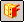

Create a Systems Library document
-
Ensure the PathFinder tab is displayed.
-
Choose Home tab→Assemble group→Create Systems Library

. -
On the PathFinder tab or in the graphics window, select the parts and subassemblies you want to add to the new systems library document, and then click the Next button on the command bar.
-
(Optional) Select any features which are associative children of a part you selected in the previous step, and then click Next.
-
On the Capture Relationships dialog box, review the parts, positioning relationships, and features that were captured, and then click OK.
-
On the command bar, click the Create button.
-
On the Create Systems Library Documents dialog box, define the name and folder location for the new systems library document, the document names for the features you captured, and the assembly template you want to use.
-
On the Create Systems Library Documents dialog box, click OK.
Note:For Solid Edge data management users who selected the option Automatically name files via Document Number and Revision, the system displays a dialog box where you can assign common properties, such as document number and revision number, as explained in Create documents with unique properties.
-
You can only add complete subassemblies to a systems library, not individual parts from a subassembly.
-
If one of the parts you are adding to the systems library was used as the parent part for an associative inter-part feature on another part in the assembly, you can include the associative child feature in the systems library document.
-
If you select an assembly pattern, the parent parts for the pattern are automatically added to the select set.
-
When you select a relationship in the Captured Relationships dialog box, the faces used to create the relationship are highlighted in the assembly window.
How do I
Place a Systems Library documentLearn more
Working with Systems Libraries in assembliesLook up more details
Create Systems Library commandCaptured Relationships dialog box
Create Systems Library command bar
Create Systems Library Documents dialog box
Parts Library tab
Place Systems Library dialog box (Input dialog)
Place Systems Library Member command bar
Teamcenter Parts Library tab